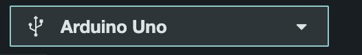
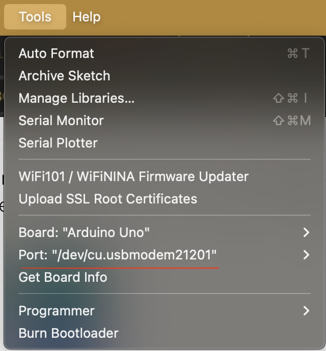
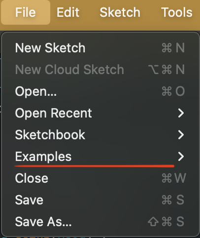
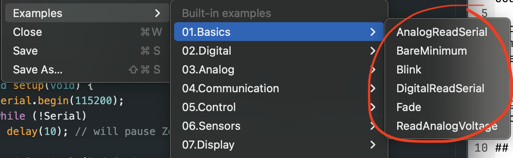

The programs written in the Arduino Software are called sketches.
Syntax refers to the rules that define the structure of a language. In computer programming, the code must be written a certain way in order for it to be understood by a compiler or interpreter.
Arduino is a C-like language, which follows the convention of using
curly brackets {} and semicolons ;, for
example. If the software is telling you there is an error, it might mean
that there is a missing semicolon or curly bracket.
For more specific rules on the programming language, refer to this Arduino Programming Notebook by Brian W. Evans.
An IDE is an integrated development environment. It is a software that provides a developer with tools to write code efficiently. The Arduino software is specifically for writing and uploading code to your Arduino board. It comes with some features:
When you connect your Arduino to your computer via USB cable, you should be able to select it from this drop down menu.

Another way to select your board, is through the menu bar.

Tools -> Port: ““
A port is referring to the name of the Arduino connected to your USB port. It may look something like this depending on what kind of operating system you are using:
/dev/cu.usbmodem14101 (Arduino Uno)COM3 (Arduino Uno)/dev/ttyACM0 (Arduino Uno)To look at some of the examples that come with the Arduino software:


Notice the Blink example. This is usually the example that most people start with.
ddfdfsSdsdidjdffdfsdfgdf